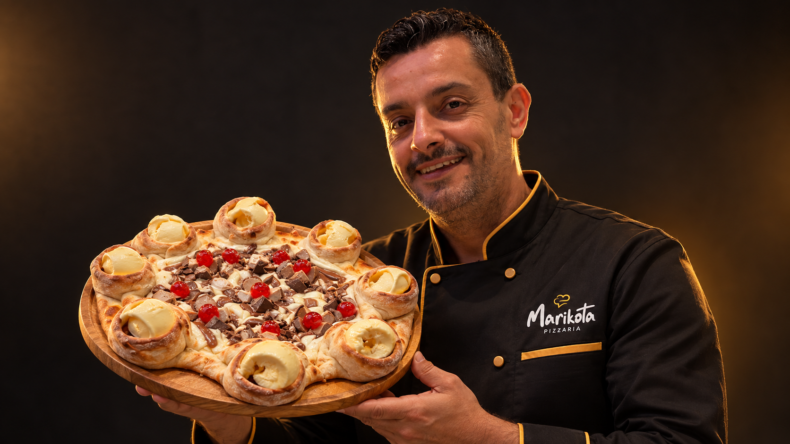
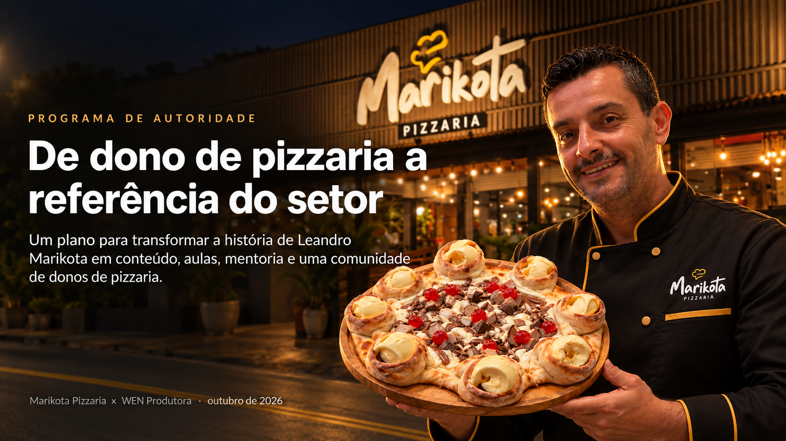

Como abrir e escalar uma pizzaria lucrativa, com quem fez isso três vezes em quatro anos. Leandro Belini, fundador da Marikota, abre a conta: ponto, CMV, rodízio, equipe, delivery e segunda unidade.
Cada degrau prepara o próximo: quem ouve o podcast vai à aula, quem vai à aula faz o curso, quem faz o curso pede a mentoria.
Podcast semanal, aula online mensal e bastidores no Instagram.
15 donos de pizzaria, uma noite com o Leandro, networking, pizza e bebida.
6 módulos gravados e uma live fechada por mês, acesso por 12 meses.
2 chamadas individuais por mês e WhatsApp, para quem está longe.
4 chamadas individuais, WhatsApp e visita presencial na sua pizzaria. 10 vagas.
Em quatro anos, a Marikota saiu de uma casa em São Bernardo para três unidades no ABC paulista, com app próprio, programa de fidelidade e um produto que a região inteira conhece: a pizza Borda Vulcão de Sorvete. A quarta unidade, em Santos, está a caminho.

Gravados em estúdio, com planilhas e modelos para baixar. Uma live fechada por mês para tirar dúvidas com o Leandro.
E o erro que fecha pizzaria no primeiro ano. Checklist de ponto e planilha de ponto de equilíbrio.
Onde o lucro se esconde. A ficha técnica de cada pizza e o número que o dono precisa saber de cor.
Giro, desperdício e ritmo de salão. A conta que ninguém faz antes de abrir o rodízio.
Contratar, treinar e segurar gente boa. Para a pizzaria funcionar sem o dono no forno.
A margem real de cada canal e como trazer o cliente para o canal próprio.
Quando é hora, o que padronizar antes e como não quebrar a primeira no caminho.
Donos, fornecedores, contadores e gente de delivery contando o que funciona de verdade. Gravado no estúdio da WEN, em São Paulo.
Leandro Belini abre a história.
Com um dono de pizzaria do ABC.
Com um fornecedor da cadeia da pizza.
Com quem vive de delivery.
Para quem já tem pizzaria e quer lucro de verdade ou a segunda unidade. Quatro chamadas individuais por mês, WhatsApp em horário comercial e uma visita presencial a cada trimestre.
Uma noite com 15 donos de pizzaria no Studio B da WEN: aula, dúvidas ao vivo, networking, pizza e bebida. Uma edição a cada 2 meses.
Para quem está fora do ABC e de São Paulo. Duas chamadas individuais por mês e WhatsApp.
Ao vivo, com o Leandro, 40 minutos. Você sai com o checklist de ponto e a planilha de ponto de equilíbrio. Inscrição pelo WhatsApp.
Próxima aula: data a definir
Serve. O módulo 1 do curso é sobre o ponto e o capital antes de abrir, e a aula gratuita começa pelos erros do primeiro ano.
O curso e a assessoria por vídeo são 100% online. A mentoria privada tem visita presencial trimestral, que fora do ABC vira um dia seu na Marikota.
Mostra a conta: ficha técnica, CMV, rodízio e margem por canal, com exemplos reais. O que não for público da Marikota é apresentado com valores de referência.
Diagnóstico, um dia na operação, plano de 90 dias e acompanhamento com 4 chamadas por mês. 10 vagas por vez, contrato mínimo de 3 meses. Valores são apresentados na conversa.